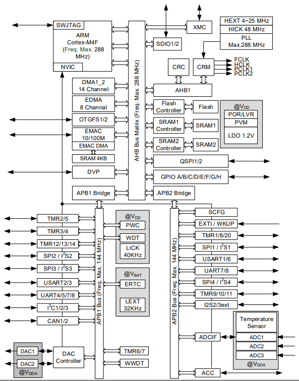

AT32F437¶
Arterytek : Cortex-M4 288 MHz 3x5.33Msps ADC 8 UART 2 CAN USB2.0 MII/RMII SPI Flash
Xin简介¶
规格参数¶
基本参数¶
发布时间：
参考价格：￥30
制程工艺：55nm
供货周期：
封装规格：LQFP64/LQFP100/LQFP144
运行环境：-40 to 105°C
RAM容量：128 ~ 512 KB
Flash容量：256/1024/4032 KB
Hint
片上配置的flash分为两种：ZW = 零等待（zero wait-state），速率可达SYSCLK 288 MHz；NZW = 非零等待（non-zero wait-state）。该系列不同型号都只配置256KB ZW Flash。透过选择字节设置支持内部闪存存储器和SRAM分配使用，以每64 K字节为一个级距配置。
特征参数¶
288 MHz Cortex-M4
3 x 5.33MSPS ADC (12-bit ADC x 16ch)
2 x 12-bit DAC
3 x I²C (支持SMBus/PMBus)
4 x SPI / I²S (SPI可达36MHz,其中I²S2/I²S3支持全双工)
4 x USART + 4 x UART (支持ISO7816，LIN，IrDA接口和调制解调控制)
2 x SDIO
2 x QSPI
2 x OTG全速控制器, 设备模式时支持无晶振（Crystal-less）
2 x CAN 2.0B
10/100M以太网MAC，专用DMA和4K SRAM，MII/RMII接口
模拟性能¶
5.33MSPS 3x ADC
3x:ref:adc12b < STM32G474 5x:ref:adc12b
5.33MSPS (12-bit ADC) > HPM6750 5MSPS (12-bit ADC)
芯片架构¶
多达116个I/O端口, 所有I/O口可映像到16个外部中断； 几乎所有I/O口可容忍5V输入信号
所有I/O口均为快速I/O, 寄存器访问速度最高fᴀʜʙ
电源相关¶
电压范围：2.6V ~ 3.6V
功耗范围：
时钟体系¶
Xin选择¶
品牌对比¶
型号对比¶
288 MHz |
512KB/4MB |
4 |
3 |
2/2 |
100M |
|
288 MHz |
512KB/4MB |
4 |
3 |
2/2 |
AT32F435¶

版本对比¶

LQFP64 10 x 10 mm
LQFP100 14 x 14 mm
LQFP144 20 x 20 mm
LQFP64封装XMC仅支持推动8位模式LCD屏。LQFP100封装XMC仅支持存储块1、存储块2、和SDRAM。其中存储块1仅能使用NE1片选支持直接连接复用信号的NOR/PSRAM存储器；存储块2仅能使用NCE2片选支持16位或8位NAND闪存存储器。LQFP100封装没有Port G，因此中断线无法使用。
LQFP100封装XMC透过外加锁存器件可连接非复用信号的PSRAM和SRAM